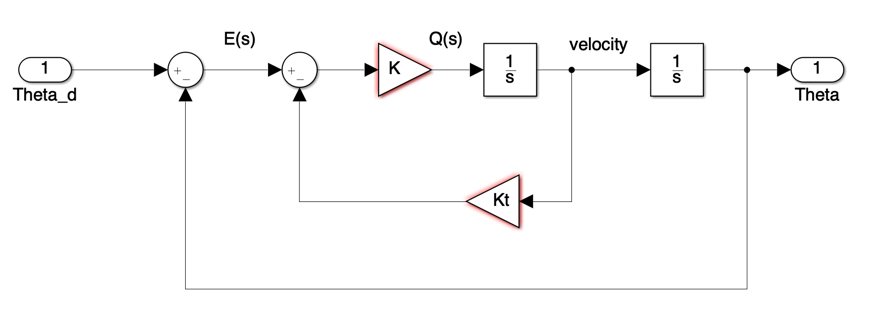
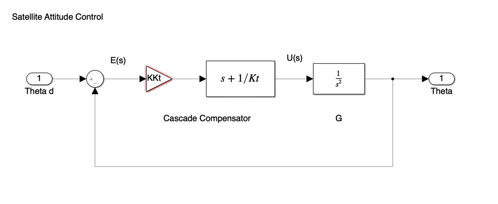

rlocus(Go),title('Root locus for cascade compensated system')

Lecturer
Set up MATLAB
cd matlab
pwd
clear all
format compact
With velocity feedback the system is as shown in Figure 1.
 Figure 1 Satellite Attitude Control with Velocity Feedback
For this system, the root locus equation is
$$1+\frac{KK_T \left(s+\frac{1}{K_T }\right)}{s^2 }$$and the design parameters where calculated to be
Kt = 0.5; K = 8;
The closed-loop characteristic equation is
clce1 = [1, K*Kt, K];
The closed-loop transfer function is then:
Gc1 = tf(K,clce1)
In this document we illustrate how we may implement a silimilar control law using cascade compensation.
 Figure 2 The cascade compensator
The compensator is in series with the plant so that, in general, if the compensator transfer function is
$$D(s)=\frac{K_c(s+z_1)\ldots(s+z_r)}{(s+p_1)\ldots(s+p_q)}$$and the compensator poles and zeros are simply added to the poles and zeros of the plant.
If we wish to achieve the same root-locus equation as the previous design (1) then the compensator must have transfer function
$$D(s) = K_c(s + z_1)$$where
$$K_c = K K_t = 4$$$$z_1 = 1/K_t = 2$$Let us verify that this gives the same results as the previous example:
z1 = -1/Kt;
Go = zpk(z1,[0, 0],1) % root locus gain initially set to unity
rlocus(Go),title('Root locus for cascade compensated system')
Find the root locus gain at the point on the root locus where the poles are located at $s=-2+j2$.
Kc = rlocfind(Go,-2+2j)
Now add this to the compensator
D = tf(Kc*[1 -z1],1)
Analysis of this compensator reveals that it is of a type known as "proportional plus derivative" (P+D). The output of the compensator is of the form
$$U(s) = K_DsE(s)+K_{\mathrm{prop}}E(s)$$$$u(t) = K_d\frac{de(t)}{dt}+K_{\mathrm{prop}}e(t)$$and is made up of a "proportion" of the error plus a proportion of the rate-of-change (or derivative) of the error. It is the derivative term that gives the dampening effect required to allow the frictionless system to come to rest.
G=tf(1,[1,0,0])
Gc2 = feedback(D*G,1)
Let us plot and compare the step responses of the P+D and velocity feedback results.
[y1,t1]=step(Gc1);
[y2,t2]=step(Gc2);
plot(t1,y1,t2,y2),...
legend('Velocity fb','P+D'),...
title('Step response: closed-loop compensated system')

Notice that, although the settling time is about the same in both designs, the overshoot is considerably larger in the P+D compensated system. This is because the zero added by the P+D compensator appears in the numerator of the closed-loop transfer function. (refer back to Contact Hour 2 for an explanation).
An executable version of this document is available to download as a MATLAB Live Script file pplusd.mlx.
The Simulink model of the satellite attitude control system with P+D compensation is satellite.slx.